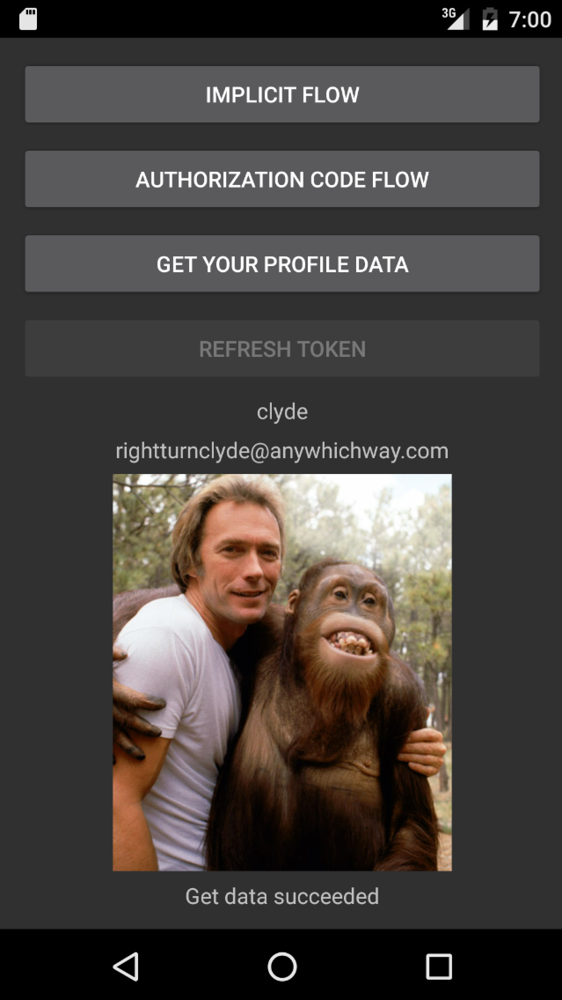

Duration
15 minutes
Goals
The primary goal of this lab is to retrieve data stored on an OAuth 2.0 protected server after a user has been authenticated. This lab is a continuation of the previous exercise. You can use your existing solution or start from the solution in the Exercise 2 Completed folder.
You will use Xamarin.Auth's OAuth2Request to make two round trips to the ComicBook server. The first time you will retrieve the user's profile information: name, email address, and a URL for their profile picture. The second time you will pull down the profile picture as a stream for display in the UI. In both cases, you will include the Access Token in the request to prove you are authorized to access the user's data. The image below shows the completed app with the user's name, email address, and picture.
Assets
The provided Exercise 3 folder contains a subfolder named Completed with a solution you can use to check your work. Please make sure you have this folder before you begin.
Challenge
- Add the Json.NET NuGet package to each project in the solution.
- Whenever you successfully get an Account object, enable getProfileButton.
- Display the profile data: in the Get Profile button's Clicked handler, create an OAuth2Request and use it to retrieve the user's profile data. It will be returned as a Json string with Name, Email, and ImageUrl values. Display the name and email address using the existing Labels.
- Display the profile image: create an OAuth2Request using the previously retrieved Image Url. Read the response as a stream, convert the stream to an ImageSource and assign it to the Image control.
Steps
Add the Json.NET component to the platform-specific projects
- Add the Json.NET NuGet package to each project in the solution.
- We'll be using LINQ to JSON in this exercise. Add the Newtonsoft.Json.Linq using statement to MainPage.xaml.cs in the PCL.
Get Profile Data
-
In MainPage.xaml.cs, whenever you get an account object, enable getProfileButton by setting its
IsEnabledproperty totrue. This will be done in the constructor and in the OnAuthCompleted method. - Add a try/catch block to the GetProfileButtonClicked method. The remaining steps will be completed in the
tryblock. -
Create an OAuth2Request object:
pass "GET" as the method parameter,
the Api Endpoint defined in ServerInfo as the url parameter,
nullfor the parameters argument, and the account as the final parameter. -
Call the OAuth2Request's GetResponseAsync method and save the result in a local variable named response.
Notice this method returns a
Task. You need toawaitthis call and add theasynckeyword before the method signature. - Call and await the response's GetResponseTextAsync method. This is the user's profile data encoded as Json.
-
Use the static
JObject.Parsemethod provided by Json.NET to get a JObject holding the parsed data. - Extract the 3 profile data points: "Name", "Email", and "ImageUrl" into local string variables. If you're not familiar with JObject you can reference the code below.
-
Set the
Textproperty of the nameText and emailTextLabels to display the profile name and e-mail address. - Run the application, authenticate, and then press the Get your profile data button. You should see the profile data.
Display Profile Image
-
Still working in the
tryblock in GetProfileButtonClicked, create another OAuth2Request object named imageRequest. The arguments will be similar to the previous OAuth2Request; again this will be a "GET", however the url parameter will be a newUricreated with the retrievedimageUrlfrom the previous step. -
Create a
streamfrom the OAuth2Request: first call its GetResponseAsync method, and then call and await GetResponseStreamAsync on the result. Save the stream to a local variable named stream. -
To display the image, we'll update the Source property on profileImage. Call the static
ImageSource.FromStreammethod. Notice that the FromStream method accepts aFunc. You can use a lambda that returns stream for this parameter: "()=> return stream". - Run the application again, authenticate, and press the Get your profile data button. You should see the profile data along with the profile image.
- Close the application and then run it again. Without authenticating, press the Get your profile data button. You should see the profile data along with the profile image as before - the app is using the persisted Access Token to authorize with the server.
Summary
In this exercise, you retrieved text and image user data from an OAuth 2.0 protected server and displayed it in a Xamarin.Forms application.